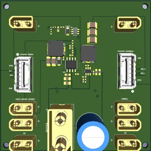
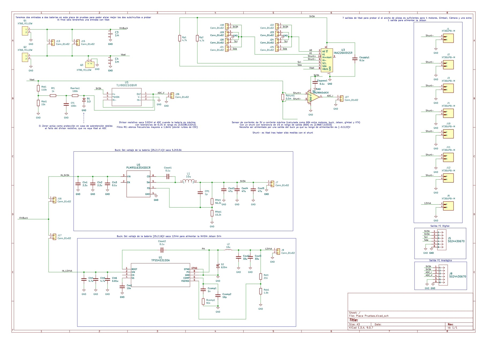
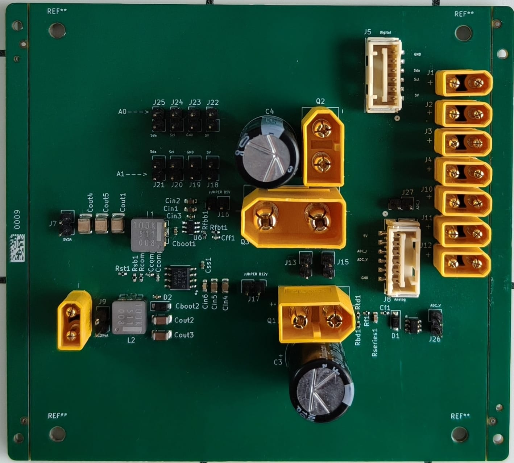

XRF-PDB-01
Placa de distribución de potencia para UAV
Alimentación
Baterías de 6 celdas de polímero de litio
Motores
4 (multirrotor)
Raíl 1
5 V / 3 A — controlador de vuelo
Raíl 2
12 V / 4 A — computación embarcada (NVIDIA Jetson Orin)
Resultado
Cableado 120→48 cm · Masa 60→44 g (−27%)
Problema
Centralizar la distribución de potencia de un dron multirrotor sin penalizar peso ni fiabilidad.
Decisión
Dos raíles CC/CC dedicados y distribución simétrica de cobre para control térmico y del centro de gravedad.
Verificación
Monitorización de tensión y corriente con telemetría al controlador de vuelo (Pixhawk).
Resultado
Reducción medida de masa y longitud de cableado del subsistema de potencia.



El render 3D corresponde al diseño final; la fotografía es de una iteración de prototipo previa. Proyecto de defensa: los gerbers no se publican sin autorización de XRF. Las imágenes y resultados mostrados aquí sí están autorizados a nivel de resumen técnico.